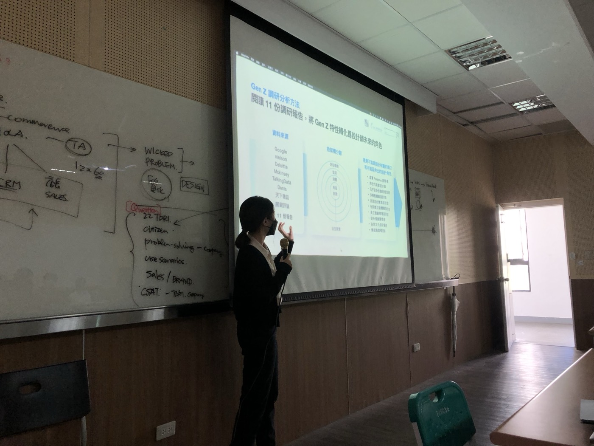
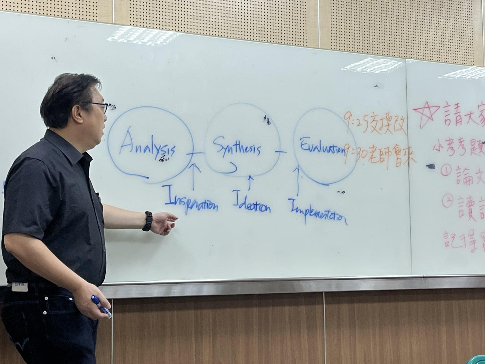

先釐清：你說的「設計思考」是哪一種？
「Design Thinking」在學術界與企業界的意思並不相同。Johansson-Sköldberg et al. (2013）建議區分兩個詞： 研究設計師「怎麼想」的學術傳統，稱為 designerly thinking； 把設計師的做法整理成非設計師也能用的流程與工具，才是一般所稱的 design thinking。 讀文獻時先判斷作者站在哪一邊，才不會把兩種論述混在一起引用。
- 起點：1960 年代設計方法運動、設計認知研究
- 問題：專業設計師實際上如何思考、推理、做決策？
- 方法：口語分析、觀察、實驗、個案、理論建構
- 代表：Simon、Schön、Lawson、Cross、Dorst、Goldschmidt
- 發表：Design Studies、Design Issues、DTRS 研討會
- 起點：2000 年代 IDEO、Stanford d.school、商學院
- 問題：組織如何用設計師的方法做創新？
- 方法：流程模型、工作坊、工具箱（同理地圖、原型、測試）
- 代表：Kelley、Brown、Martin、Boland & Collopy
- 發表：Harvard Business Review、商管書籍、顧問報告
發展時間軸
點選年代篩選；色點代表所屬脈絡： 設計研究、 管理／實務
文獻中的八種論述
Johansson-Sköldberg et al. (2013）整理出設計研究中的 5 種 designerly thinking 論述，以及管理領域的 3 種 design thinking 論述。 每一種的知識論根源不同，是寫文獻回顧時很好用的分類架構。
| # | 把設計看成…… | 代表學者 | 關鍵概念 |
|---|---|---|---|
| DESIGNERLY THINKING（設計研究） | |||
| 1 | 創造人造物 | Simon (1969) | 人造物科學、有限理性、滿意解（satisficing） |
| 2 | 反思性實踐 | Schön (1983) | 行動中反思、與情境的反思性對話 |
| 3 | 解決問題的活動 | Buchanan (1992) | 棘手問題、設計作為通才式的人文學科 |
| 4 | 一種推理與理解的方式 | Lawson (1980)、Cross (1982, 2006) | designerly ways of knowing、解決方案導向 |
| 5 | 創造意義 | Krippendorff (2006) | 語意學轉向、以人為中心的意義設計 |
| DESIGN THINKING（管理論述） | |||
| 6 | 設計公司的工作方式 | Kelley (2001)、Brown (2008, 2009) | IDEO 方法、以人為本、快速原型 |
| 7 | 處理組織中不確定問題的方法 | Boland & Collopy (2004) | design attitude vs. decision attitude |
| 8 | 管理者必備的能力 | Martin (2009) | 知識漏斗、溯因推理、探索與利用的平衡 |
Johansson-Sköldberg, U., Woodilla, J., & Çetinkaya, M. (2013). Design thinking: Past, present and possible futures. Creativity and Innovation Management, 22(2), 121–146. https://doi.org/10.1111/caim.12023
六個核心概念
棘手問題 Wicked problems
Rittel & Webber (1973)；Buchanan (1992)
設計問題沒有明確定義、沒有停止規則、答案只有好壞而無對錯；每次嘗試都會改變問題本身。這是設計不能套用線性流程的根本原因。
詳細說明：棘手問題 vs. 結構不良問題行動中反思 Reflection-in-action
Schön (1983)
設計師「命名—框定—移動—評估」，與情境進行反思性對話。挑戰了 Simon 式「技術理性」把設計當成最佳化問題的看法。
問題與解答共同演化
Maher & Poon (1996)；Dorst & Cross (2001)；Maher & Tang (2003)
問題空間與解答空間同時發展、互相定義。設計師不是先完整定義問題再求解，而是在兩者間來回跳躍直到「搭橋」成功。
解決方案導向 Solution-focused
Lawson (1980)；Cross (1982)
Lawson 的實驗發現：建築系學生透過提出方案來了解問題，科學系學生則先分析規則。設計有其獨特的「知的方式」。
溯因推理與框架創造
Dorst (2011)；Martin (2009)
當「要什麼」（價值）已知、而「是什麼」與「如何」都未知時，設計師要同時提出新框架（frame）與方案——Dorst 認為這才是設計思考的核心。
草圖與視覺思考
McKim (1973)；Goldschmidt (1991)
草圖不只是記錄想法，而是「看見—看成」（seeing that / seeing as）的辯證過程，讓設計師從自己的圖中發現新可能。
創新 vs. 創意
- 業界講「創新」，比較少講「創意」：創新是在特定脈絡下有價值的新東西。
- 小 c（creativity）是創意；大 C 是改變世界的創新，例如原子彈。
- 設計思考是達成創新的方法之一，不是唯一的方法。
設計角色在未來五年的變化

棘手問題（wicked problems）詳解
Rittel & Webber (1973)在討論都市與社會規劃時提出這個詞，用來對比數學、下棋這類 溫和問題（tame problems）。「wicked」不是道德上的邪惡，而是指問題難纏、會抵抗被解決， 所以中文也譯作抗解問題、詭譎問題、惡劣問題；本講義採用較通俗的「棘手問題」。 Buchanan (1992)把它帶進設計領域，主張大多數設計問題都是棘手問題。
Rittel & Webber (1973) 的十個特徵
- 沒有明確的問題定義——定義問題就等於在想解法
- 沒有停止規則——永遠可以做得更好，只能在資源用完時停下
- 解答沒有對錯，只有好壞（或「夠好」）
- 解答無法立即、也無法最終檢驗其效果
- 每個解答都是「一次性操作」，會留下無法抹去的後果，沒有試錯機會
- 沒有可以列舉的解答集合，也沒有公認的可用手段清單
- 每個問題本質上都是獨特的
- 每個問題都可以看成另一個問題的症狀
- 如何解釋問題中的落差，決定了解決方向
- 規劃者沒有犯錯的權利——必須為後果負責
和「結構不良問題」有什麼不同？
Simon (1973)從認知與人工智慧的角度提出結構不良問題（ill-structured problems）， 也譯作劣構問題；相近的說法還有 Reitman 的定義不良問題（ill-defined problems）。 兩個概念常被混用，但出發點不同：
| 結構良好問題 well-structured |
結構不良問題 ill-structured（Simon, 1973） |
棘手問題 wicked（Rittel & Webber, 1973） |
|
|---|---|---|---|
| 例子 | 解方程式、下棋 | 設計一棟房子、寫一篇論文 | 都市交通、長照、流浪動物管理 |
| 觀點 | 認知／資訊處理 | 認知／資訊處理：問題空間沒有完整給定 | 社會／政治：多方利害關係人、價值衝突 |
| 目標與評估 | 明確，有客觀的正確答案 | 不完整，需由解題者自行補充 | 眾說紛紜，好壞取決於誰在判斷 |
| 能否拆解 | 可以直接求解 | 可以：Simon 認為能分解成一連串結構良好的子問題逐步處理 | 很難：處理一部分就會改變整體，問題本身隨之變動 |
| 失敗的代價 | 可重來 | 多半可以重來、修改 | 介入會留下真實的社會後果 |
常見流程模型
管理論述普及的關鍵，是把設計過程畫成簡單的流程圖。注意：這些模型都是示意，實際設計過程是反覆、跳躍的。
英國設計協會 Double Diamond (2004)
兩個鑽石：先做對的事（problem），再把事做對（solution）。
Stanford d.school 五步驟
IDEO／Brown (2009)三個空間
並以「可行性 feasibility × 存續性 viability × 需求性 desirability」三圈交集說明創新。
DITLDESIGN 三鑽模型 Triple Diamond 本課程
台科大設計思考與創新研究室（Design Information & Thinking Lab，唐玄輝）
- 問題梳理：從利害關係人與實地研究中，把複雜、牽涉多方的社會問題萃取成可以著手的核心問題。
- 設計迭代：提出方案、製作原型，依回饋反覆修正。
- 場域驗證：把方案放到真實場域中測試，驗證實際成效——這是相對於 Double Diamond 最主要的延伸。
- 擴散：驗證有效後，推廣到更大的系統（如政府政策或全國服務）。
實例：EyeBus 視障者公車服務（2023 年臺北市 15 條路線採用）、流浪犬管理 SOP、寵物登記系統 UX 優化、動物收容所認養服務。
參考文獻：Wang, D., Hsieh, W.-A., Chen, S.-Y., & Tang, H.-H. (2022). The complexities of transport service design for visually impaired people: Lessons from a bus commuting service. International Journal of Design, 16(1), 55–73. https://doi.org/10.57698/v16i1.04

設計思考的批判與反省
過度簡化：流程取代了專業判斷
Kimbell (2011)指出管理論述把設計思考描述成普遍、去脈絡的認知風格，忽略設計實踐是嵌在材料、工具、組織與文化中的情境化活動。五步驟模型容易被誤用成「照做就會有創新」的清單。
「有用的迷思」
Norman (2010)認為設計思考並非設計師獨有，好的科學家、工程師、管理者也這樣思考；另外，有用這個標籤能幫助設計被組織重視，所以是「有用的迷思」。你認同這樣的說法嗎？
「失敗的實驗」
曾大力推廣設計思考的 Nussbaum (2011)轉而宣告它是失敗的實驗：企業把它當成線性、可套用的流程，只產出漸進式改良，並主張以「創造力商數」（Creative Intelligence）取代。
理論與證據的落差
管理論述多來自顧問案例與成功故事，較少嚴謹的實證研究；而設計研究累積了大量實證（如口語分析），兩邊卻很少對話。Johansson-Sköldberg et al. (2013）呼籲管理論述回頭汲取 designerly thinking 的研究成果。
和 QDS 課程的關係
- 口語分析：設計思考的實證知識大多來自放聲思考（think-aloud）研究。1994 年 Delft 的 DTRS 2 讓多組研究者分析同一份設計師口語資料，成果收錄於 Cross et al. (1996)的 Analysing Design Activity——本學期最後一個單元會實際練習。
- 訪談與個案研究：Lawson、Cross 研究傑出設計師的方式，是深度訪談與個案——這正是質化研究如何建構「設計師怎麼想」理論的例子。
- 文獻回顧：寫論文的第二章時，可以用上方「八種論述」判斷每篇文獻的立場，再決定你的研究要對話的是哪一條脈絡。
課堂討論
- Simon 與 Schön 對「設計是什麼」的看法有何根本差異？你自己的設計經驗比較接近哪一種？
- 如果你的研究題目用到「設計思考」這個詞，它屬於八種論述中的哪一種？為什麼？
- 設計思考五步驟模型在什麼情況下有用？什麼情況下會誤導？和 DITLDESIGN 三鑽模型的差異是？
- 如果要用質化方法研究「設計師如何思考設計解法的框架」，你會選擇訪談、個案研究，還是口語分析？
參考文獻
Alexander, C. (1964). Notes on the synthesis of form. Harvard University Press.
Archer, L. B. (1965). Systematic method for designers. Council of Industrial Design.
Boland, R. J., & Collopy, F. (Eds.). (2004). Managing as designing. Stanford University Press. https://doi.org/10.1515/9780804767439
Brown, T. (2008). Design thinking. Harvard Business Review, 86(6), 84–92.
Brown, T. (2009). Change by design: How design thinking transforms organizations and inspires innovation. HarperBusiness.
Buchanan, R. (1992). Wicked problems in design thinking. Design Issues, 8(2), 5–21. https://doi.org/10.2307/1511637
Cross, N. (1982). Designerly ways of knowing. Design Studies, 3(4), 221–227. https://doi.org/10.1016/0142-694X(82)90040-0
Cross, N. (2006). Designerly ways of knowing. Springer. https://doi.org/10.1007/1-84628-301-9
Cross, N., Christiaans, H., & Dorst, K. (Eds.). (1996). Analysing design activity. Wiley.
Dorst, K. (2011). The core of ‘design thinking’ and its application. Design Studies, 32(6), 521–532. https://doi.org/10.1016/j.destud.2011.07.006
Dorst, K., & Cross, N. (2001). Creativity in the design process: Co-evolution of problem–solution. Design Studies, 22(5), 425–437. https://doi.org/10.1016/S0142-694X(01)00009-6
Goldschmidt, G. (1991). The dialectics of sketching. Creativity Research Journal, 4(2), 123–143. https://doi.org/10.1080/10400419109534381
Johansson-Sköldberg, U., Woodilla, J., & Çetinkaya, M. (2013). Design thinking: Past, present and possible futures. Creativity and Innovation Management, 22(2), 121–146. https://doi.org/10.1111/caim.12023
Jones, J. C. (1970). Design methods: Seeds of human futures. Wiley.
Kelley, T. (2001). The art of innovation: Lessons in creativity from IDEO, America’s leading design firm. Currency/Doubleday.
Kimbell, L. (2011). Rethinking design thinking: Part I. Design and Culture, 3(3), 285–306. https://doi.org/10.2752/175470811X13071166525216
Krippendorff, K. (2006). The semantic turn: A new foundation for design. CRC Press. https://doi.org/10.4324/9780203299951
Lawson, B. (1979). Cognitive strategies in architectural design. Ergonomics, 22(1), 59–68. https://doi.org/10.1080/00140137908924589
Lawson, B. (1980). How designers think. Architectural Press.
Maher, M. L., & Poon, J. (1996). Modeling design exploration as co-evolution. Microcomputers in Civil Engineering, 11(3), 195–209. https://doi.org/10.1111/j.1467-8667.1996.tb00323.x
Maher, M. L., & Tang, H.-H. (2003). Co-evolution as a computational and cognitive model of design. Research in Engineering Design, 14(1), 47–64. https://doi.org/10.1007/s00163-002-0016-y
Martin, R. (2009). The design of business: Why design thinking is the next competitive advantage. Harvard Business Press.
McKim, R. H. (1973). Experiences in visual thinking. Brooks/Cole.
Norman, D. (2010, June 25). Design thinking: A useful myth. Core77. https://www.core77.com/posts/16790/design-thinking-a-useful-myth-16790
Norman, D. (2013, March 19). Rethinking design thinking. Core77. https://www.core77.com/posts/24579/rethinking-design-thinking-24579
Nussbaum, B. (2011, April 5). Design thinking is a failed experiment. So what’s next? Fast Company.
Reitman, W. R. (1964). Heuristic decision procedures, open constraints, and the structure of ill-defined problems. In M. W. Shelly & G. L. Bryan (Eds.), Human judgments and optimality (pp. 282–315). Wiley.
Rittel, H. W. J., & Webber, M. M. (1973). Dilemmas in a general theory of planning. Policy Sciences, 4(2), 155–169. https://doi.org/10.1007/BF01405730
Rowe, P. G. (1987). Design thinking. MIT Press.
Schön, D. A. (1983). The reflective practitioner: How professionals think in action. Basic Books.
Simon, H. A. (1969). The sciences of the artificial. MIT Press.
Simon, H. A. (1973). The structure of ill structured problems. Artificial Intelligence, 4(3–4), 181–201. https://doi.org/10.1016/0004-3702(73)90011-8
Wang, D., Hsieh, W.-A., Chen, S.-Y., & Tang, H.-H. (2022). The complexities of transport service design for visually impaired people: Lessons from a bus commuting service. International Journal of Design, 16(1), 55–73. https://doi.org/10.57698/v16i1.04